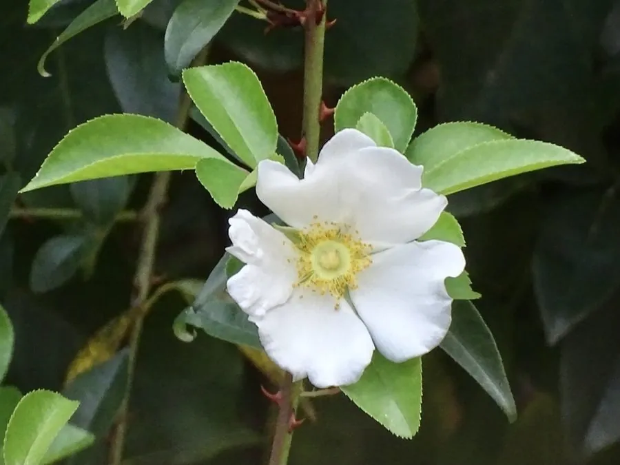

灌木与花木 · 植物界
金樱子 Rosa laevigata

蔷薇科常绿攀援灌木，春季开白色大花，果实密生刺毛，可入药与泡酒，是南方山野常见的野生蔷薇。
- 分类
- 门被子植物门纲木兰纲目蔷薇目科蔷薇科属蔷薇属
- 栖息环境
- 山坡灌丛、溪边与路旁，喜光也耐半阴
- 地理分布
- 中国华中、华南、西南及华东南部
- 保护级别
- 暂无评估；中国未列入国家重点保护野生植物名录
物种志
金樱子为蔷薇科蔷薇属常绿攀援灌木，高可达 5 米，枝条具倒钩刺。叶互生，奇数羽状复叶，小叶 3 枚，稀 5 枚，椭圆状卵形，边缘具细锯齿。花单生，白色，花径 5–8 厘米，花瓣 5 枚，花期 4–6 月；果实为蔷薇果，倒卵形，密生刺毛，成熟时红黄色，果期 9–11 月。
金樱子原产中国南方，生于山坡灌丛、溪边与路旁，华中、华南、西南各地常见。它喜光，也耐半阴，耐旱、耐瘠薄，适宜疏松肥沃、排水良好的土壤。春季白花大而醒目，秋季果实金黄，是南方山野常见的蔷薇；果实可熬糖、酿酒，入药有固精缩尿、涩肠止泻之效。栽培以扦插和压条繁殖为主，需设支架供其攀爬，并注意修剪过密枝。
形态与习性
- 株高攀援高可达 5 米
- 花期4–6 月，花白色、径 5–8 厘米
- 果期9–11 月，蔷薇果密生刺毛
- 光照喜光，也耐半阴
- 水分耐旱，忌积水
- 土壤疏松肥沃、排水良好的土壤
- 主要用途果实入药、泡酒，庭院观花
趣味知识
- 金樱子的果实密生刺毛，成熟时金黄，因此得名。
- 它的花白色硕大，是南方山野常见的蔷薇。
- 果实可熬糖、泡酒，入药有固精缩尿之效。
- 金樱子枝条具倒钩刺，采收果实时需格外小心。